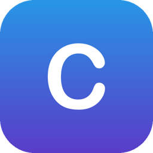

Capturer, annoter, filmer : l’outil d’écran qu’on voulait, fait maison. Nom provisoire.
Le nom « Cliché » est provisoire, et l’icône aussi. Pas encore de téléchargement : la page se mettra à jour à la première version publiée.